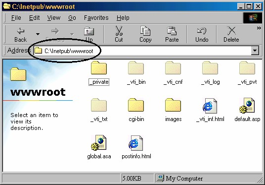

9 Web server Windows 98
Penulis menyarankan untuk menggunkana sistem operasi Windows 2000, baik
Professional maupun Server. Namun jika Anda tidak memiliki salah satunya, Anda
masih bisa menggunakan Windows 98. Dengan catatan, Anda tidak bisa
menggunakan seluruh komponen FrontPage XP, sebab tidak ada FrontPage 2000
Extensions Server.
Pada Windows 98 web server yang digunakan adalah Personal Web Server (PWS).
Selanjutnya akan dibahas tentang persiapan dengan Windows 98, yang meliputi
instalasi NIC, protokol, jaringan, web server (PWS).
9.1 Menginstal kartu jaringan
Menginstal kartu jaringan pada Windows 98, pada prinsipnya sama dnegan pada
Windows 2000. Langkah yang diperlukan adalah:
1. Tutuplah Windows 98 lalu matikan komputer.
2. Pasanglah NIC pada slotnya, jangan lupa untuk memasang mur peguncinya.
3. Setelah NIC terpasang dengan benar dan kuat, nyalakan lagi komputer Anda dan
aktifkan Windows 98. Begitu Windows 98 Anda jalankan lagi, sesaat kemudian
muncul Add New Hardware Wizard.
Gambar 1.52 Add New Hardware Wizard
4. Jika Add New Hardware Wizard tidak tampil, bukalah Control Panel, lalu klik
ganda icon Add/Remove Hardware.
Gambar 1.53 Control Panel
5. Muncul kotak dialog Add New Hardware wizard seperti Gambar 1.52. Lalu klik
Next, tampil pemberitahuan bahwa proses plug and play akan dijalankan.
Gambar 1.54 sebelah kiri.
6. Klik Next, proses plug and play dijalankan. Jika berhasil menemukan jenis NIC
yang kita pasang, maka muncul kotak dialog seperti Gambar 1.54 kanan.
7. Klik Next, muncul pilihan pencarian driver NIC yang telah ditemukan tersebut.
Gambar 1.55 Pilihan pencarian driver NIC
8. Klik pilihan pertama lalu klik Next, muncul kotak dialog penentuan letak driver.
Seperti Gambar 1.56.
Gambar 1.56 Penentuan lokasi driver
9. Masukkan disket driver NIC, lalu klik Floppy disk drives.Kalau Anda
menggunakan CD driver, klik pilihan CD-ROMb drive. Kemudian klik Next,
Windows akan mencari driver yang sesuai pada disket atau CD Anda.
10. Jika tidak berhasil, klik Back untuk kembali ke kotak dialog di atas (Gambar
1.56) lalu klik pilihan Specify a location, dan klik tombol Browse, muncul
kotak dialog Browse to Folder. Tindakan ini adalah untuk menuntun Windows
menemukan driver.
Gambar 1.57 kotak dialog Browse to Folder
11. Dengan kotak dialog Browse to Folder, bukalah folder yang menyimpan driver
NIC Anda. Lalu klik OK, kembali ke kotak dialog wizard. Klik Next, sekarang
Windows telah mendapatkan yang dicarinya, seperti berikut:
12. Klik Next, proses instalasi driver dijalankan. Jika Windows meminta CD
installer Windows 98, masukkan CD tersebut.
13. Setelah selesai instalasi, muncul kotak dialog terakhir:
14. Klik tombol Finish, ada permintaan untuk restart windows.
15. Klik Yes, Windows akan di-restart.
16. Setelah Windows di-restart, muncul kotak dialog pengisian password.
Gambar 1.60 Pengisian password
17. Tidak perlumengisikan password, lalu klik OK.
9.2 Mengatur protokol
Berikutnya adalah pengaturan protokol, langkah yang diperlukan adalah:
1. Aktifkan Control Panel.
Gambar 1.61 Icon Network
2. Klik ganda icon Network. Muncul kotak dialog Network.
Gambar 1.62 Kotak dialog Network
3. Klik tombol Add. Muncul kotak dialog Select Network Component Type.
Gambar 1.63.
Gambar 1.63 Pilihan Client
4. Klik icon Client lalu klik tombol Add. Muncul kotak dialog select Network
Client. Gambar 1.64.

Gambar 1.64 K otak dialog select Network Client
5. Klik icon Microsoft lalu klik icon Client for Microsoft Networks lalu klik OK.
Kembali ke kotak dialog Network yang menampilkan hasilnya, yaitu terbentuk
dua buah icon. Lihat Gambar 1.65.
6. Perhatikan, kini terdapat tiga icon. Kemudian klik icon TCP/IP lalu klik tombol
Properties, muncul pengaturan TCP/IP seperti berikut ini:

7. Kemudian klik pilihan Specify an IP address, kotak isian IP Address dan
Subnet Mask aktif.
8. Pada kotak isian IP Address tuliskan empat kombinasi alamat IP yang diberikan
oleh ISP Anda atau administrasi jaringan di kantor Anda, misalnya 10.96.19.7
lalu pada kotak isian Subnet Mask tuliskan angkanya, misal 255.255.0.0.
9. Klik OK, kembali ke kotak dialog Network dan klik OK. Jika ada permintaan,
asukkan CD installer Windows 98.
10. Klik Yes, Windows akan di-restart. Hasilnya pada desktop muncul icon
Network Neighborhood. Untuk memeriksa hasil pengaturan ini, klik kanan
icon tersebut, lalu klik perintah Properties. Muncul kotak dialog Network. Lihat
Gambar 1.68 . Anda bisa memriksa pengaturan yang ada padanya.
9.3 Instalasi PWS (Personal Web Server)
Berikutnya adalah pembahasan tentang cara instalasi dan pengaturan web server
untuk Windows 98, yaitu PWS (Personal Web Server).
Bagaimana cara memperoleh PWS? Carilah CD Master Installer Windows 98, di
sana telah tersedia yang Anda butuhkan, yaitu pada folder PWS.
Setelah Anda mendapatkan master CD Windows 98, langkah selengkapnya
menginstal PWS adalah:
1. Masukkan CD Master Windows 98.
2. Dengan menggunakan Windows Explorer atau My Computer, bukalah folder
PWS, yaitu di …\add-ons \pws. Lihat Gambar 1.69 di bawah ini:
Gambar 1.69 Lokasi file Setup.exe
3. Setelah folder pws terbuka, klik ganda file Setup.exe. Muncul tampilan awal
instalasi.
Gambar 1.70 Tampilan awal instalasi Personal Web Server
4. Klik Next, muncul tampilan kedua yang memberikan tiga tombol pilihan
komposisi instalasi, yaitu Minimum, Typical dan Custom.
Gambar 1.71 Tampilan kedua, pemilihan komposisi instalasi
5. Klik tombol Typical, muncul tampilan ketiga untuk penentuan letak folder web.
Sebaiknya tidak perlu Anda ubah pilihan yang diajukan, yaitu
C:\Inetpub\wwwroot.
Gambar 1.72 Tampilan ketiga, pemilihan lokasi folder
6. Klik Next, proses penyalinan file dimulai dengan tampilan seperti Gambar 1.73.
7. Setelah sele sai proses penyalinan file, muncul tampilan terakhir.
8. Klik Finish, muncul permintaan untuk restart.Klik Yes.

Gambar 1.76 Folder InetPub\WWWroot
9.4 Menguji coba web server
Untuk memeriksa hasilnya pada browser:
1. Altifklan browser Internet Explorer.
2. Klik tombol Stop.
3. Pada kotak address tuliskan http://localhost/.
4. Tekan Enter, muncul tampilan seperti berikut:
Gambar 1.77 Halaman Home Page PWS
Tampilan tersebut menunjukkan bahwa web server Anda mulai saat telah siap
digunakan.
Copyright © Herlan Lesmana
Created with the Freeware Edition of HelpNDoc: Full featured multi-format Help generator